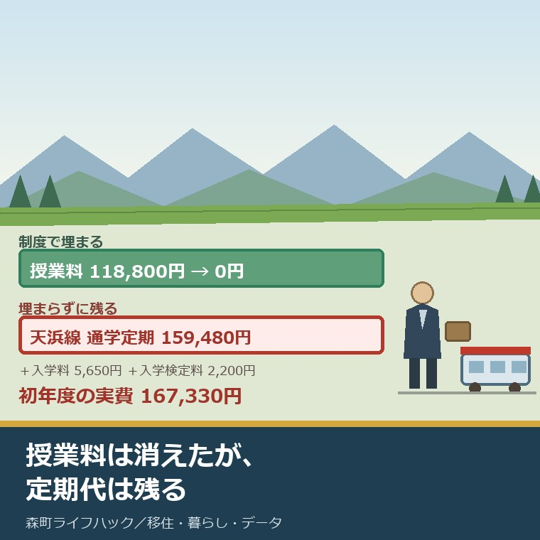
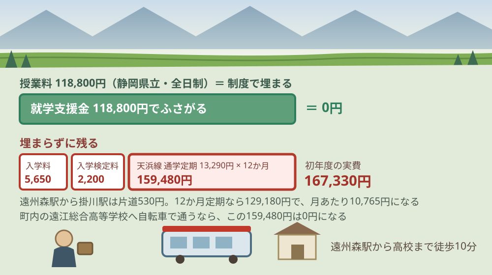
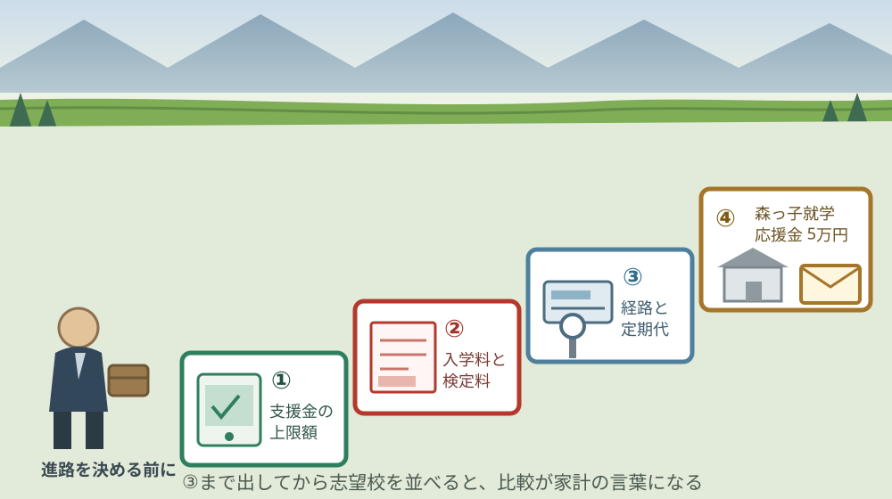

森町から高校へ通う｜2026年4月の授業料支援と通学の実費

この記事の要点
Q. 2026年4月から高校の授業料が無償になったと聞きました。森町から通う場合、結局いくらかかりますか。
A. 令和8年4月1日から就学支援金の所得制限は撤廃され、上限は公立118,800円・私立457,200円です。静岡県立の授業料は年118,800円なので公立は授業料分が埋まります。ただし入学料5,650円と通学費は残ります。遠州森駅から掛川駅の通学定期は1か月13,290円です。
静岡県周智郡森町（遠州森町）で、中学生の子の進路を考えている。あるいは、中学生を連れて森町へ移ることを考えている。この記事は、そういうご家族に向けて書いています。
2026年4月に、高校の授業料の仕組みが変わりました。「高校無償化」という言い方で報じられた話です。変わったのは事実で、金額も大きい。
ただ、家計に効くかどうかは別の話です。森町から高校へ通う家庭では、授業料より通学費のほうが大きくなる場合があります。そこを先に数えないと、進路の比較ができません。
今日は2026年8月23日。改正法が施行されたのは令和8年4月1日で、4か月半が過ぎました。令和8年度の在校生には、もう反映されています。
順に、公表されている内容から並べます。数字を並べたあとで、それが月いくらになるかを計算します。
公式情報から確定できること
2026年8月23日時点で、文部科学省、静岡県公式、天竜浜名湖鉄道、秋葉バスサービス、森町公式から確認できたことを並べます。出典は記事の末尾に載せています。
一つ目。所得制限は撤廃されました。文部科学省によれば、高等学校等就学支援金の支給に関する法律の一部を改正する法律は令和8年3月31日に成立し、令和8年4月1日に施行されています。
二つ目。支給上限額は公立118,800円、私立457,200円です。同省の資料によれば、いずれも年額。私立の通信制課程は337,200円、国立は115,200円です。
三つ目。月額と単位あたりの額も決まっています。同じ資料によれば、公立の全日制は月9,900円・支給期間36月、私立の全日制は月38,100円・36月。単位制の場合は公立4,812円・私立18,528円で、通算74単位・年間30単位までです。
四つ目。定時制と通信制は額が違います。公立の定時制は月2,700円・48月、公立の通信制は月520円・48月。私立の定時制は月38,100円、私立の通信制は月28,100円で、いずれも48月です。
五つ目。費用の負担割合が変わりました。同資料によれば、公立・私立高校等はこれまでの国10分の10負担から、国4分の3・都道府県4分の1になりました。国立高校等は国が10分の10です。
六つ目。令和8年度の予算額は5,824億円です。前年度の4,074億円から1,750億円増えています。内訳は就学支援金交付金5,800億円、公立高等学校授業料不徴収交付金0.1億円、事務費交付金24億円です。
七つ目。制度は3年以内に検証されます。同資料は「新たな制度の検証については、法施行後、３年以内の期間に十分な検証を行った上で、必要な制度の見直しを実施」と記しています。
八つ目。静岡県立高校の授業料は年118,800円です。静岡県公式によれば、全日制課程の授業料が年118,800円、定時制（単位制以外）が32,400円、通信制が1単位336円です。
九つ目。入学料と入学検定料は別に要ります。同じページによれば、全日制の入学料は5,650円、入学検定料は2,200円。定時制は入学料2,100円・検定料950円、通信制は入学料500円です。
十番目。授業料以外を支える給付金もあります。静岡県公式によれば、国公立高等学校等奨学給付金の公立全日制の額は、住民税非課税世帯143,700円、生活保護世帯32,300円、所得割額100円以上105,500円未満の世帯47,900円、105,500円以上182,500円未満の世帯35,930円です。
十一番目。その給付金には申請期限があります。同じページによれば、令和8年度の提出期限は2026年8月21日（金曜日）でした。2026年8月23日時点で、この期限はすでに過ぎています。
十二番目。森町には町内に高校が1校あります。静岡県立遠江総合高等学校の所在地は森町森2085、電話は0538-85-6000です。同校のアクセス案内は「天竜浜名湖鉄道 遠州森駅下車徒歩10分」としています。
十三番目。遠州森駅から掛川駅までの運賃は530円です。天竜浜名湖鉄道の運賃表（2024年10月1日改定）によれば、遠州森駅からは西鹿島590円、天竜二俣530円、新所原1,430円です。
十四番目。その区間の通学定期は1か月13,290円です。同じ運賃表の定期運賃表によれば、普通運賃530円の区間は通学定期が1か月13,290円、3か月35,880円、6か月67,780円、12か月129,180円。通勤定期は1か月20,560円です。
十五番目。袋井方面は路線バスになります。秋葉バスサービス公式によれば、2026年5月1日の運賃改定で、袋井駅前と遠州森町の間は片道590円から710円になりました。初乗りは200円、秋葉線の頭打ち運賃は1,100円です。
十六番目。遠州森駅には駅員がいます。天竜浜名湖鉄道によれば、遠州森駅の営業時間は平日6時45分から16時15分、土日祝9時から16時15分。同社は「高等学校が近くにあり、朝夕は学生の乗降が多い駅です」と記しています。
十七番目。森町には入学時の応援金があります。森町公式によれば、森っ子就学応援金は高等学校等入学で児童1人につき5万円（小中学校入学は3万円）。対象は児童手当の受給対象者で、その年度の4月10日時点で森町に住民票がある方です。
十八番目。高校入学の場合は申請が要ります。同じページによれば、小中学校入学（保護者が公務員以外）は申請不要で児童手当受取口座へ自動振込ですが、高等学校等入学はWEB・郵送・窓口のいずれかで申請し、在学証明書または学生証が必要です。担当は健康こども課こども家庭係（0538-86-6330）です。

この絵で描きたかったのは、消えた費用と残った費用の厚みの差です。授業料118,800円は制度で埋まりました。けれど掛川まで通うなら、通学定期だけで年159,480円かかります。埋まった額より、残った額のほうが大きい。
森町の暮らしに置き換えると、月いくらか
ここからは、公表された金額を割り戻します。私の計算であることを先に断っておきます。
まず、町内の遠江総合高等学校へ自転車で通う場合。授業料118,800円は就学支援金で埋まり、初年度に出るのは入学検定料2,200円と入学料5,650円の7,850円です。通学費は0円になります。
次に、遠州森駅から掛川駅まで天浜線で通う場合。通学定期1か月13,290円を12か月で159,480円。初年度は入学料等7,850円を足して167,330円です。
12か月定期を使えば少し下がります。129,180円ですから、1か月定期を12回買うより30,300円安い。1か月あたりに直すと10,765円です。
この差額30,300円は、私の商売感覚では小さくありません。空き家の火災保険1年分や、草刈りを2回外注したときの費用と桁が同じです。「まとめ買いで少し安くなる」ではなく、家計の一項目として意味のある額です。
袋井方面へバスで通う場合も出します。片道710円を往復1,420円、月20日通うと28,400円。通学定期の設定は同社の窓口で確認が要りますが、現金で払い続けるとこの水準になります。
3年分でも数えます。掛川へ天浜線で通う場合、12か月定期を3回で387,540円。入学時の7,850円を足して395,390円です。授業料が無償でも、40万円近くが動きます。
ここに森町の応援金を並べます。森っ子就学応援金は高等学校等入学で5万円。初年度の負担167,330円に対して、29.9％を埋める計算になります。
ただし、この5万円は入学時の1回だけです。2年目と3年目の159,480円には、当てられません。3年分395,390円に対して5万円は、12.6％にとどまります。
親の通学の足も、同じ地図の上にあります。バス運賃が17年ぶりに改定された話は森町のバス運賃改定を整理した記事に書きました。子の通学費と親の通院費は、同じ路線で動きます。
良い点：この改正の、よくできているところ
まず、この改正のよくできているところを数えます。批判の前に置くのが、私の書き方の順番です。
一つ目。所得の線引きが消えました。これまでは年収590万円未満と910万円未満で額が三段に分かれていました。境目の1万円で支給額が変わる仕組みが無くなったのは、家計の予測がしやすくなる変化です。
二つ目。私立の上限が457,200円に上がりました。従来は年収590万円未満で396,000円、910万円以上は118,800円でした。私立を選ぶかどうかの判断が、世帯収入から切り離されます。
三つ目。単位制の額まで書いてあります。公立4,812円・私立18,528円、通算74単位・年間30単位まで。定時制や通信制を選ぶ生徒にも、計算できる形で数字が出ています。
四つ目。3年以内に検証すると先に書いています。制度を作った側が見直しの時期を明記しているのは、珍しい形です。次に何が変わりうるかを、家庭の側も想定できます。
五つ目。森町の応援金は、高校まで対象にしています。小中学校の3万円だけで終わらせず、高等学校等入学に5万円を出しています。町の規模を考えると、置いてあること自体が判断です。
注文したい点：森町の家から見て足りないところ
その上で、一事業者として注文したい点を並べます。制度の担当も限られた人数で動いていることは承知の上です。
一つ目。通学費は、制度の外に置かれたままです。授業料が全国一律で埋まった結果、住む場所による差は通学費だけに残りました。町内から通えば0円、掛川へ通えば年159,480円。この差は制度では埋まりません。
二つ目。入学料5,650円と入学検定料2,200円が対象外です。額としては小さい。ただ、「無償になった」と聞いた家庭が、入学の直前に7,850円を用意することになります。金額よりも、聞いていた話と違う点が効きます。
三つ目。奨学給付金の期限が、周知と噛み合っていません。令和8年度の提出期限は2026年8月21日でした。制度が4月に大きく変わった年に、夏の期限が動いていないのは、追いきれない家庭が出ます。
四つ目。森町の応援金は入学時の1回だけです。一事業者としては、通学費が毎年かかる町の実情に合わせて、2年目以降にも届く形を望みます。金額の多寡より、続くかどうかのほうが家計には効きます。
五つ目。秋葉バスの通学定期の額が、公表資料から読み取れませんでした。同社が公表しているのは区間ごとの普通運賃の例です。袋井方面の高校へバスで通う家庭は、電話で確認するしかありません。

対案・結論：今日、保護者が確かめられること
結論を急がないと決めたうえで、今日から動ける順番を書きます。順番はイラストのとおりです。
| 順番 | 確かめること | 確認先 |
|---|---|---|
| 1 | 志望校が公立か私立か、全日制か定時制か | 就学支援金の上限額が変わる。文部科学省の支給限度額の表 |
| 2 | 入学料と入学検定料の額 | 静岡県公式「授業料等について」。県立全日制は5,650円と2,200円 |
| 3 | 自宅からの経路と、片道の運賃 | 天竜浜名湖鉄道の運賃表、秋葉バスサービス 0538-85-2141 |
| 4 | 通学定期の1か月・6か月・12か月の額 | 同じ運賃表の定期運賃表。遠州森駅 0538-85-2211 |
| 5 | 森っ子就学応援金の対象に当たるか | 森町 健康こども課こども家庭係 0538-86-6330 |
| 6 | 奨学給付金の対象と、来年度の申請期限 | 静岡県教育委員会高校教育課 054-221-2141 |
1は、今日できます。志望校の種別を決めるだけで、上限額が118,800円か457,200円かが決まります。ここが決まらないと、以降の計算が動きません。
2も今日できます。県立を受けるなら、入学検定料2,200円と入学料5,650円を紙に書いておいてください。この7,850円は、支援金では埋まりません。
3と4が、森町の家では一番効きます。経路を決めて、定期代を月額で出す。掛川なら13,290円、12か月定期なら月あたり10,765円です。志望校を2つ比べるなら、この額も2つ並べます。
5は電話1本です。4月10日時点の住民票が条件なので、転入を考えている家庭は日付が効きます。4月11日に転入すると、その年度は対象になりません。
6は来年度に向けた準備です。令和8年度の期限2026年8月21日は過ぎています。来年の期限を今のうちに聞いておけば、同じ取りこぼしを繰り返さずに済みます。
転入の時期そのものを迷っている方には、別の記事があります。九月に動くか四月に合わせるかの逆算は子連れ移住の入り時期を整理した記事に書きました。
駅が近いかどうかを判断材料にする前に、確かめることがあります。本数と接続の見方は天浜線の駅の使い方をまとめた記事にあります。
家族に残す記録
ここからは、確認した内容を紙1枚に残すための項目です。下の子のときに同じことを調べ直さないためのものです。
書き留めるのは、志望校名と種別、就学支援金の上限額、入学料と入学検定料、通学の経路と片道運賃、通学定期の1か月と12か月の額、確認した日付です。この6つで、3年分の見通しが立ちます。
あわせて、森町の健康こども課こども家庭係の電話番号（0538-86-6330）、静岡県教育委員会高校教育課の電話番号（054-221-2141）、秋葉バスサービスの電話番号（0538-85-2141）、遠州森駅の電話番号（0538-85-2211）、応援金を申請した日を並べておきます。
住まいの位置そのものを決める段階の方には、別の記事があります。地区名より通勤・通学・買い物・災害地図を重ねる考え方は森町の住所選びについて書いた記事にまとめました。
実家の名義、境界、農地、道路まで含めて順に整理したい方は、ふじがおか実家カルテの森町相談窓口もご利用ください。住所が分かれば、建物と敷地のどちらについても、確認する順番を整理できます。
大石の視点
ここからは、私（大石浩之）の個人の考えです。公的な事実とは分けてお読みください。私自身が森町から高校へ通う家庭の相談を受けた体験があるわけではありません。以下は、公表資料を家計と立地の目で読んだ私の見方です。
今日、結論を出す必要はありません。ただ、通学定期の月額だけは先に出しておいてください。志望校を決めるのは秋でも冬でもいい。この数字が出ているかどうかで、決めるときの重さが変わります。
私が売買の相談で必ず言うのと、同じことです。「査定額を先に出す前に、道路と境界と名義を見る」。決断を急がせるのではなく、決めるための材料を1つ増やすのが今日の成果です。
その目で見ると、この改正でいちばん重い変化は118,800円でも457,200円でもありません。授業料が全国一律で埋まったことで、住む場所による差が通学費だけに残ったという点です。これは不動産の話になります。
言い方を変えます。今までは「授業料が払えるか」と「通学できるか」の二つで進路が決まっていました。今年からは、後者だけになりました。森町のように学校が1校の町では、この変化がそのまま立地の話に置き換わります。
数字で言えば、町内から自転車で通う家と、掛川へ天浜線で通う家では、3年で387,540円の差が付きます。私の商売でいえば、これは家の値段の差として現れる額です。駅からの距離が、進路の選択肢の幅として値段に乗る。
ここは正直に書きます。私は、この改正を素直に良い変化だと言い切れずにいます。所得の線引きが消えたことは、家計の予測を確実に楽にしました。一方で、埋まったのは全国どこでも同じ額の項目で、地方の家庭にだけ残る通学費には手が付いていません。結果として、都市部と森町の差は、制度の前より開いたのではないか。そう思う一方で、線引きで悩む家庭が減ったことの価値も分かる。この二つを、私はまだ整理できていません。
それでも一つだけ言い切ります。森町から高校へ通う家庭の家計を左右するのは、授業料ではなく定期代です。制度の話より先に、時刻表と運賃表を開いてください。
森町の可能性は、まだ十分に残っていると私は見ています。町内に高校が1校あり、その最寄り駅から徒歩10分という条件は、県内の町では簡単に揃うものではありません。「学校が近い」は、これから値段の付く条件になります。
だから、実家や土地が森町にあるご家族には、進路の話と住まいの話を一度に見てほしいと考えています。子の通学と親の通院は、たいてい同じ路線を使います。片方だけで判断すると、もう片方で行き詰まります。
結論が保留のままでも、確認済みの事実が一つ増えたなら、それは前進です。上限額が分かった。定期代が分かった。どちらも、次の判断を軽くします。
まとめ
- 文部科学省によれば、高等学校等就学支援金の改正法は令和8年3月31日成立・令和8年4月1日施行で、所得制限が撤廃された（2026年8月23日確認）
- 支給上限額は公立118,800円、私立（全日制）457,200円、私立（通信制）337,200円、国立115,200円
- 月額は公立の全日制9,900円・36月、私立の全日制38,100円・36月。単位制は公立4,812円・私立18,528円（通算74単位、年間30単位まで）
- 費用の負担割合は、公私立高校等が国4分の3・都道府県4分の1（従来は国10分の10）
- 令和8年度の予算額は5,824億円で、前年度の4,074億円から1,750億円の増
- 静岡県公式によれば、県立高校の授業料は全日制で年118,800円、入学料5,650円、入学検定料2,200円で、後者2つは就学支援金の対象外
- 国公立高等学校等奨学給付金の公立全日制の額は、非課税世帯143,700円、生活保護世帯32,300円ほか。令和8年度の提出期限は2026年8月21日で、すでに過ぎている
- 静岡県立遠江総合高等学校は森町森2085にあり、アクセス案内は天竜浜名湖鉄道 遠州森駅下車徒歩10分
- 天竜浜名湖鉄道の運賃表（2024年10月1日改定）によれば、遠州森駅から掛川駅は530円。通学定期は1か月13,290円、6か月67,780円、12か月129,180円
- 秋葉バスサービス公式によれば、袋井駅前と遠州森町の間は片道710円（2026年5月1日改定）
- 森町公式によれば、森っ子就学応援金は高等学校等入学で1人5万円。4月10日時点で森町に住民票があることが条件で、高校の場合は申請が要る
- 私の計算では、町内の高校へ自転車で通う場合の初年度の実費は入学料等7,850円のみ
- 私の計算では、掛川へ天浜線で通う場合、通学定期の12か月分は159,480円、12か月定期なら129,180円で30,300円安い
- 私の計算では、12か月定期を3回で387,540円、入学時の7,850円を足すと3年で395,390円
- 私の計算では、森っ子就学応援金5万円は初年度の負担167,330円の29.9％、3年分395,390円の12.6％にあたる
よくある質問
Q1. 2026年4月から、高校の授業料は本当に無償になりましたか。
A1. 文部科学省によれば、令和8年4月1日施行の改正で高等学校等就学支援金の所得制限が撤廃され、支給上限額は公立の全日制で年118,800円、私立の全日制で年457,200円になりました。静岡県立高校の授業料は年118,800円なので、公立では授業料の全額に相当します。ただし入学料5,650円と入学検定料2,200円は対象外で、通学費も含まれません。
Q2. 森町から高校へ通うと、交通費は月いくらかかりますか。
A2. 天竜浜名湖鉄道の運賃表によれば、遠州森駅から掛川駅までの大人普通運賃は530円で、同じ表の通学定期は1か月13,290円、6か月67,780円、12か月129,180円です。秋葉バスサービス公式によれば、袋井駅前と遠州森町の間は片道710円です。町内の遠江総合高等学校へ通う場合は、遠州森駅から徒歩10分と案内されています。
Q3. 森町に、高校生の家庭が使える町独自の支援はありますか。
A3. 森町公式によれば、森っ子就学応援金として高等学校等に入学する児童・生徒の保護者に1人5万円が交付されます。対象は児童手当の受給対象者で、その年度の4月10日時点で森町に住民票がある方です。高等学校等入学の場合は自動振込ではなく、WEB・郵送・窓口のいずれかで申請し、在学証明書または学生証が要ります。担当は健康こども課こども家庭係（0538-86-6330）です。
最後に一つだけ。ここに書いた支給上限額、授業料、入学料、運賃、定期代、応援金の額は、いずれも2026年8月23日時点で公表されている内容です。秋葉バスサービスの通学定期の額、遠江総合高等学校の制服・教材にかかる費用、令和9年度の奨学給付金の申請期限、私立高校の授業料が上限額を超える場合の差額は、公表資料からは確認できていません。進路を決める前に、必ず志望校と、森町の健康こども課こども家庭係（0538-86-6330）へご確認ください。
参考にした公式情報
- 高等学校等就学支援金・新制度／文部科学省（高等学校等就学支援金の支給に関する法律の一部を改正する法律が令和8年3月31日に成立し令和8年4月1日に施行されたこと、所得制限が撤廃されたこと、申請がオンラインシステムe-Shienで行われること、リーフレット・支給限度額・申請手続きの各PDFが掲載されていることを2026年8月23日に確認）
- 高等学校等就学支援金・新制度の概要／文部科学省（令和8年度予算額が5,824億円（前年度4,074億円）であること、内訳が就学支援金交付金5,800億円・公立高等学校授業料不徴収交付金0.1億円・事務費交付金24億円であること、所得制限が「なし」で支給上限額が公立118,800円・私立457,200円、私立通信制337,200円、国立115,200円であること、負担割合が公私立高校等で国3/4・都道府県1/4、国立高校等で国10/10であること、支給期間と支給限度額が高等学校全日制で公立9,900円/月・36月、私立38,100円/月・36月、単位制で公立4,812円/単位・私立18,528円/単位（通算74単位・年間30単位まで）であること、定時制が公立2,700円/月・48月、通信制が公立520円/月・48月であること、「新たな制度の検証については、法施行後、３年以内の期間に十分な検証を行った上で、必要な制度の見直しを実施」と記載されていること、令和2〜7年度の旧制度で私立高等学校全日制が年収590万円未満396,000円・590万〜910万円未満118,800円であったことを2026年8月23日に確認）
- 授業料等について／静岡県（県立高等学校の授業料が全日制課程で年118,800円、定時制課程（単位制以外）32,400円、定時制（単位制）1単位1,740円、通信制1単位336円であること、入学料が全日制・専攻科5,650円・定時制2,100円・通信制500円であること、入学検定料が全日制・専攻科・中学校2,200円、定時制950円であること、授業料が原則口座振替で7月31日・10月31日・1月31日の3回に分納されること、入学料が入学許可の翌日から15日以内の納入であること、担当が教育委員会高校教育課（電話054-221-3111）であることを2026年8月23日に確認。ページ更新日 2025年12月12日）
- 奨学給付金（静岡県国公立高等学校等）の申請手続き／静岡県（対象が7月1日現在で高等学校等に在学する高校生等の保護者等かつ静岡県内に住所を有する者であること、世帯区分が生活保護世帯・住民税非課税世帯・所得割額100円以上105,500円未満・105,500円以上182,500円未満で分かれること、公立高校全日制の給付額が生活保護世帯32,300円・非課税世帯143,700円・所得割100円〜105,500円未満47,900円・105,500円〜182,500円未満35,930円であること、提出期限が2026年8月21日（金曜日）であること、担当が静岡県教育委員会高校教育課（電話054-221-2141）であることを2026年8月23日に確認。ページ更新日 2026年8月7日）
- 森っ子就学応援金について／静岡県森町（対象が児童手当の受給対象者で、小学校・中学校・高等学校等に入学する児童・生徒の保護者、かつ「その年度の4月10日時点で森町に住んでいて、住民票がある」方であること、交付額が小学校・中学校入学で児童1人につき3万円、高等学校等入学で1人につき5万円であること、4月中旬に通知が郵送されること、小中学校入学（保護者が公務員以外）は申請不要で児童手当受取口座へ振り込まれること、高等学校等入学または保護者が公務員の場合はWEB・郵送・窓口のいずれかで申請し、保護者の本人確認書類・受取口座確認書類・対象児童の在学証明書または学生証が必要であること、担当が健康こども課こども家庭係（電話0538-86-6330）であることを2026年8月23日に確認。ページ更新日 2026年4月17日）
- 鉄道・民間路線バス・タクシー リンク集／静岡県森町（鉄道として天竜浜名湖鉄道、民間路線バス等として秋葉バスサービス株式会社、タクシーとして静岡県タクシー協会が掲載されていること、秋葉バスサービス株式会社についてホームページ・バスロケーションシステム・時刻表・運賃・路線図の各リンクが並んでいることを2026年8月23日に確認）
- 運賃と時刻表／天竜浜名湖鉄道株式会社（掲載の「全体の運賃表(普通&定期運賃)」が2024年10月1日運賃改定であること、遠州森駅から掛川駅530円・掛川市役所前460円・西掛川460円・戸綿220円・森町病院前220円・遠江一宮310円・天竜二俣530円・西鹿島590円・新所原1,430円であること、定期運賃表で普通運賃530円の区間の通学定期が1か月13,290円・3か月35,880円・6か月67,780円・12か月129,180円、通勤定期が1か月20,560円であること、小人運賃がおとなの半額であること、遠州森駅の電話番号が0538-85-2211であることを2026年8月23日に確認）
- アクセス／静岡県立遠江総合高等学校（所在地が〒437-0215 静岡県周智郡森町森2085番地、電話が0538-85-6000であること、「天竜浜名湖鉄道 遠州森駅下車徒歩10分」と記載されていること、新東名森・掛川インターより約5分、東名袋井インターより約20分、JR掛川駅より約30分と案内されていること、平成21年に周智高校と森高校の統合により開校したことを2026年8月23日に確認）

最終確認日：2026-08-23 ／ 本記事は公表情報と執筆者の見解を分けて記載しています。秋葉バスサービスの通学定期の額、遠江総合高等学校の制服・教材にかかる費用、令和9年度の奨学給付金の申請期限、私立高校の授業料が支給上限額を超える場合の差額は、公表資料から確認できていません。制度・金額は変更されることがあります。進路を決める前に、必ず志望校および森町の健康こども課こども家庭係へご確認ください。